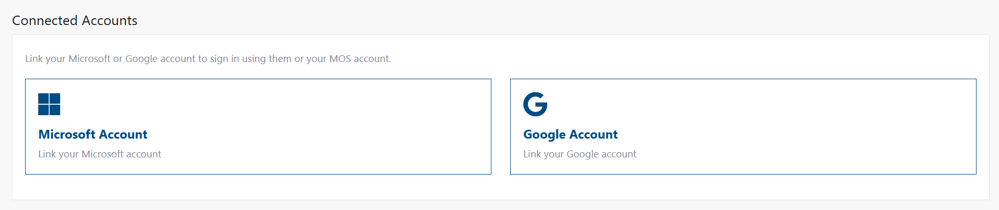

Profile: Linked Accounts
Access Level
Authenticated Users Only
Overview
Linked accounts allow you to sign into Match Official System using your Microsoft or Google account in addition to your primary credentials. This provides extra convenience and an additional way to access your account if you forget your password.

What you can do:
- Link your Microsoft account
- Link your Google account
- Unlink accounts at any time
- Log in with any linked account
Why Link Social Accounts?
Convenience - Sign in with one click using Microsoft or Google - No need to remember another password
Account Recovery - If you forget your primary password, you can still sign in with a linked social account - Provides backup access to your account
Flexibility - Switch between login methods depending on your preference - Maintain your primary login method while adding alternatives
Account Linking Process Flow
Linking Workflow
flowchart TD
Start([User clicks Link Account button]) --> Navigate[Redirect to Microsoft/Google login]
Navigate --> SocialAuth{Already signed in to social account?}
SocialAuth -->|Yes| Consent[Review permissions]
SocialAuth -->|No| SocialLogin[Enter email and password]
SocialLogin --> Consent
Consent --> Approve{Approve connection?}
Approve -->|Cancel| CancelFlow[Return to profile]
CancelFlow --> ShowError[Show cancellation message]
Approve -->|Yes| Callback[Return to MOS with auth code]
Callback --> CheckExisting{Social account already linked?}
CheckExisting -->|Yes| BlockLink[Block linking attempt]
BlockLink --> ErrorMsg[Error: Account already linked]
CheckExisting -->|No| ValidateUser{User logged into MOS?}
ValidateUser -->|No| ErrorAuth[Error: Must be logged in]
ValidateUser -->|Yes| SaveLink[Save link to database]
SaveLink --> UpdateDisplay[Update social account display name]
UpdateDisplay --> Success[Redirect with success message]
Success --> ShowSuccess[Show: Account linked successfully]
ShowSuccess --> RefreshUI[Show Unlink button, hide Link button]Unlinking Workflow
flowchart TD
Start([User clicks Unlink Account button]) --> Modal[Show confirmation modal]
Modal --> Confirm{User confirms?}
Confirm -->|Cancel| CloseModal[Close modal, no change]
Confirm -->|Unlink| RemoveDB[Delete record from database]
RemoveDB --> DeleteB2C[Delete social B2C user object]
DeleteB2C --> CheckSuccess{Successfully removed?}
CheckSuccess -->|No| ShowError[Show error message]
CheckSuccess -->|Yes| Redirect[Redirect to profile page]
Redirect --> ShowSuccess[Show: Account unlinked successfully]
ShowSuccess --> RefreshUI[Show Link button, hide Unlink button]Social Login with Linked Account
sequenceDiagram
actor User
participant Browser
participant Social as Microsoft/Google
participant MOS as MOS System
participant DB as Database
User->>Browser: Click "Sign in with Microsoft/Google"
Browser->>MOS: Request social login
MOS->>Social: Redirect to social provider
Social->>User: Show login page
alt Already signed in
Social->>Social: Use existing session
else Not signed in
User->>Social: Enter credentials
Social->>Social: Authenticate user
end
Social->>Browser: Return with auth code
Browser->>MOS: Send auth code
MOS->>Social: Exchange code for tokens
Social->>MOS: Return tokens with social objectId
MOS->>MOS: Extract social objectId from token
MOS->>DB: Check if social objectId is linked
alt Social account not linked
DB->>MOS: No record found
MOS->>Browser: Reject sign-in
Browser->>User: Error: Account not linked
else Social account is linked
DB->>MOS: Return local account objectId
MOS->>DB: Load user session with local objectId
DB->>MOS: User profile data
MOS->>MOS: Create authentication session
MOS->>Browser: Redirect to dashboard
Browser->>User: Successfully signed in
endHow to Link an Account
Linking Microsoft Account
- Navigate to your profile settings
- Click your name or avatar in the top navigation bar
- Choose "My Account" from the dropdown menu
Alternative navigation
In the My Account section, you can also select Update Profile from the sidebar.
- Find the Linked Accounts section
-
Scroll to "Linked Accounts" or "Connected Accounts"
-
Click "Link Microsoft Account"
- The button appears under the Microsoft Account section
-
You'll be redirected to Microsoft's login page
-
Sign in with your Microsoft account
- Enter your Microsoft email address
- Enter your Microsoft password
-
Complete any security verification if requested
-
Return and confirm
- You'll be automatically returned to your profile
- You'll see a confirmation message: "Your Microsoft account has been linked successfully"
- Microsoft Account now appears as "Linked" in your profile
Linking Google Account
The process is the same as Microsoft:
- Go to your profile settings (top right of any page)
- Find the Linked Accounts section
- Click "Link Google Account"
- Sign in with your Google account (email and password)
- You'll see a confirmation: "Your Google account has been linked successfully"
What Happens When You Link
When you link an account, the system creates a secure connection between your Match Official System account and your Microsoft/Google account. The connection allows you to sign in using either method.
How to Unlink an Account
Unlink Microsoft or Google Account
- Go to your profile settings
- Click your name or avatar
-
Select "Profile Settings"
-
Find the Linked Accounts section
- Scroll to your linked accounts
-
Find the account you want to unlink
-
Click the "Unlink" button
-
The "Unlink" button appears next to each linked account
-
Confirm in the popup
- A confirmation window appears: "Are you sure you want to unlink your [Provider] account?"
-
Click "Unlink" to confirm
-
Confirmation message
- You'll see: "Your [Provider] account has been unlinked successfully"
- The account no longer appears as linked in your profile
After Unlinking
After unlinking an account, you will no longer be able to sign in using that social account. You'll need to use your primary password to access Match Official System. Consider changing your password if you may forget it.
How to Log In With a Linked Account
After you've linked an account, you can log in using it:
-
Go to the Match Official System login page
-
Instead of entering your email and password, look for:
- "Sign in with Microsoft" button
-
"Sign in with Google" button
-
Click the social login button
- You'll be redirected to Microsoft or Google
- If you're already signed into Microsoft/Google in your browser.
Seamless Login
If you're already logged into your Microsoft or Google account in your browser, you might not need to enter your password again. Just click the social login button and you'll be signed in automatically.
- You're signed in!
- The system recognises your social account is linked to your profile
- Your session is established with your Match Official System account
- You have full access with your linked account
Understanding Account Linking
What Gets Connected?
When you link an account, the system securely connects: - Your Match Official System account (your email, password, and user data) - Your Microsoft or Google identity (your social account email and ID)
The connection is stored securely in the system's database.
Multiple Linked Accounts
You can link both Microsoft and Google accounts to the same Match Official System account:
Your Match Official System Account
├─ Primary: Email + Password
├─ Linked: Microsoft Account
└─ Linked: Google Account
You can sign in using any of these three methods.
Are My Passwords Shared?
No. Your Match Official System password and your Microsoft/Google passwords are completely separate:
- Linking does not require you to share your primary password with Microsoft or Google
- Linking does not give Microsoft or Google access to your Match Official System data
- Only the system administrator can see the connection exists
Can Someone Else Link My Account?
No. Linking requires you to be:
- Already signed into your Match Official System account
- Able to authenticate with your Microsoft or Google account
No one else can link accounts on your behalf.
Troubleshooting
"Linking succeeds but I can't sign in with that account"
What this means: The account appears as linked in your profile, but the login button doesn't work.
How to fix it:
- Try signing out completely and clearing your browser cache
- Go back to the login page
- Click the social login button again
- If the issue persists, contact your system administrator
"The system says my social account is already linked"
What this means: You tried to link a social account that's already connected to a different Match Official System account.
How to fix it:
- You can only link a social account once per system
- If you have multiple accounts, you'll need to decide which one to use
- Contact your system administrator if you need to consolidate accounts
"I unlinked my account but I still can't log in"
What this means: After unlinking, the social login option is no longer available for you.
How to fix it:
- Use your primary email and password to sign in instead
- If you forgot your password, use the forgot password flow to reset it
- You can link the social account again anytime
"Sign in with [Provider] button isn't working"
What this means: The social login method might be temporarily unavailable, or the account isn't properly linked.
How to fix it:
- Try refreshing the page
- Clear your browser cookies and cache
- Make sure you're using the same email address for your social account as your Match Official System account
- Try unlinking and relinking the account
- Contact your system administrator if the issue continues
"I can't find the Linked Accounts section"
Where to look:
- Click your name or profile icon in the top navigation
- Select "Profile" or "Profile Settings"
- Look for a section labeled "Linked Accounts," "Connected Accounts," or "Social Accounts"
- It should be on the main profile page or in a security/settings tab
Security Considerations
Best Practices
- Choose strong passwords: Your Microsoft and Google passwords should be strong and unique
- Enable two-factor authentication: Enable 2FA on your Microsoft and Google accounts for extra security
- Review linked accounts regularly: Periodically check your linked accounts to ensure they're still needed
- Unlink accounts you don't use: Remove social accounts if you're no longer using them to sign in
If You're Concerned About Security
- Change your password: If you suspect someone accessed your account, change your password
- Unlink all accounts: If you're concerned about social account linking, unlink all accounts and use only your primary password
- Contact your administrator: Report any suspicious activity to your system administrator
FAQ
Q: Can I link multiple social accounts? A: Yes. You can link both your Microsoft account and your Google account to the same Match Official System account.
Q: If I forget my Microsoft/Google password, can I still access Match Official System? A: Yes. You can still sign in using your primary email and password. Then you can use the forgot password flow if needed.
Q: Can I link the same social account to multiple Match Official System accounts? A: No. Each social account can only be linked to one Match Official System account.
Q: Does linking an account change my password? A: No. Your primary password remains unchanged. Linking just adds another way to sign in.
Q: What happens if I delete my Microsoft/Google account? A: You'll no longer be able to sign in using that social provider. You can still use your primary password to access Match Official System.
Q: Is my account secure if I link social accounts? A: Yes. Linking is secure and only requires authentication from both accounts. Your data remains protected.
Q: Can I link accounts with different email addresses? A: Your linked social account should ideally use the same email address as your Match Official System account, though the system will allow different emails. Emails will however be sent only to your primary B2C local account.
Q: How do I know which accounts are linked? A: Go to your Profile Settings and look at the Linked Accounts section. It shows all currently linked accounts.
Next Steps
- Change Your Password - Update your primary password
- Update Your Profile - Manage your profile information
- Change Your Name - Update your name in the system
- Sign In to Your Account - Learn about login options
- Recover Your Password - Reset your password if you forget it